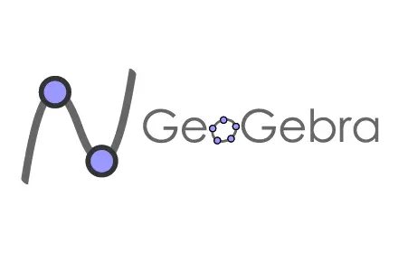

Tecnologias convergentes
Se explorará cómo la fusión de la tecnología está moldeando nuestra realidad, desde la forma en que consumimos medios hasta la forma en que trabajamos y colaboramos.
A medida que se avanza en esta era de convergencia tecnológica, es esencial comprender cómo estas tecnologías están dando forma a nuestro futuro y las implicaciones que conllevan.Las tecnologías convergentes prometen una mayor eficiencia, conectividad y personalización, pero también plantean desafíos relacionados con la privacidad, la seguridad y la dependencia de la tecnología.

Las tecnologías convergentes se caracterizan por la integración de múltiples tecnologías previamente independientes en una única plataforma o dispositivo.
¿Cómo integrar las tecnologías convergentes en la educación de manera efectiva, ética y equitativa?
Se propone realizar un estudio exploratorio y descriptivo que analice las experiencias

El uso de las tecnologías convergentes en la educación tiene un impacto positivo en el rendimiento académico, la motivación y la satisfacción de los estudiantes, siempre y cuando se realice con una adecuada formación, orientación y acompañamiento de los docentes, y con un enfoque ético y crítico que promueva el desarrollo humano y social.